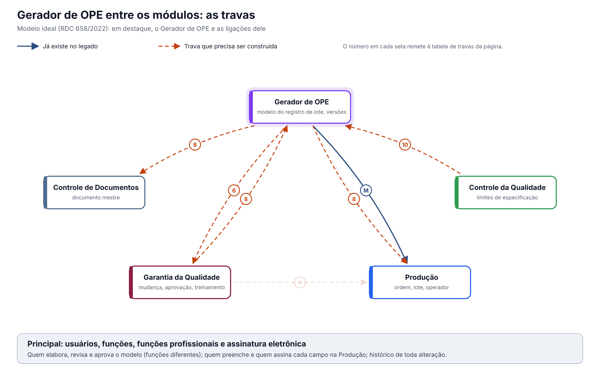

O ideal entre os módulos. O Gerador de OPE não põe um modelo em uso sozinho: a nova versão nasce de uma mudança aprovada na GQ, é aprovada com assinatura, vira documento mestre no Controle de Documentos e chega à Produção como a versão vigente da ordem. Versão 0.1, de 12/10/2026, para validação com a Produção e a Garantia da Qualidade.
Esta página mostra só as travas que envolvem o Gerador de OPE. O documento completo, com a situação única do lote e as 16 regras para todos os módulos, é "Qualidade entre os módulos: situação do lote e travas" (modelo-ideal/01-qualidade-entre-modulos.md), na Visão entre módulos. O módulo por dentro está em "O Gerador de OPE ideal" (ope-ideal.md).
1. O desenho

Em destaque, o Gerador de OPE. A linha cheia M é a única ligação que já existe no legado: o modelo chega à Produção por um arquivo baixado no Gerador e enviado à mão na ordem de produção. As demais, tracejadas, precisam ser construídas.
2. As travas que envolvem o Gerador de OPE
| # | Trava | Referência | O que o Gerador faz | Com quem | No legado hoje |
|---|---|---|---|---|---|
| 6 | Só pessoa treinada executa a etapa | Art. 39 | Avisa a GQ quando uma versão é aprovada, para o treinamento na nova versão antes do primeiro lote | GQ, Produção | Nenhum aviso; o modelo muda sem a GQ saber |
| 8 | Mudança aprovada antes de implementar, com versão | Art. 8º, XII e XIII | Abre a nova versão só a partir de uma mudança aprovada; aprova com assinatura; publica o documento mestre; entrega a versão vigente à ordem de produção | GQ, Controle de Documentos, Produção | Cada ajuste altera o modelo em uso; revisão fixa em "1"; arquivo reenviado à mão |
| 10 | Resultado fora de especificação abre investigação | Art. 245 | Recebe do CQ os limites de especificação aprovados e os grava em cada campo, para a Produção bloquear o que sair do limite | CQ, Produção, GQ | Sem limite fixo: só comparação entre dois campos |
| 16 | Integrações confiáveis: a falha avisa e não deixa a operação pela metade | Guia 33, 9.3.2.3 | Se a publicação da versão na Produção ou no Controle de Documentos falhar, a versão não fica vigente pela metade e o aprovador é avisado | Todos | Não se aplica: não há integração, só o arquivo manual |
3. Regras que valem para todas as travas
Valem também aqui as regras gerais do documento completo (requisitos 12 a 16): histórico de toda alteração com motivo, registro no momento da ação com hora do servidor, assinatura eletrônica nas decisões, acesso por função conferido em toda gravação e integrações que avisam quando falham.
Particular do Gerador: um lote já iniciado termina na versão em que começou. A nova versão vale a partir do lote seguinte.
O que a ANVISA pede: textos citados
Texto literal das normas citadas em cada tema, extraído dos arquivos da pasta Documentação/ (RDC nº 658/2022 em português e Guia nº 33/2020) por homologacao/ferramentas/citar_normas_diagnostico.py. "(...)" marca trechos omitidos. No portal, clique na referência de cada tema para ver o texto.
Tema 6 · Só pessoa treinada executa a etapa
RDC 658/2022, art. 39
Art. 39. O fabricante deve fornecer treinamento para todo o pessoal cujas funções sejam exercidas nas áreas de produção e armazenamento ou laboratórios de controle (incluindo o pessoal técnico, de manutenção e limpeza) e para outras pessoas cujas atividades possam afetar a qualidade do
produto.
Tema 8 · Mudança aprovada antes de implementar, com versão
RDC 658/2022, art. 8º
Art. 8º Um Sistema da Qualidade Farmacêutica adequado à fabricação de medicamentos deve garantir que:
(...)
XII - estejam implementados procedimentos para a avaliação prospectiva de mudanças planejadas e sua aprovação antes da implementação, levando-se em consideração as notificações e aprovações regulatórias, quando necessário;
XIII - após a implementação de qualquer mudança, uma avaliação seja realizada para confirmar que os objetivos de qualidade foram alcançados e que não houve impacto prejudicial não intencional na qualidade do produto;
(...)
Tema 10 · Resultado fora de especificação abre investigação
RDC 658/2022, art. 245
Art. 245. Alguns tipos de dados, tais como resultados de testes, rendimentos, controles ambientais, devem ser registrados de maneira a permitir a avaliação de tendência.
Parágrafo único. Quaisquer dados fora da tendência ou da especificação devem ser abordados e sujeitos a investigação.
Tema 16 · Integrações confiáveis: a falha avisa e não deixa a operação pela metade
Guia nº 33/2020, item 9.3.2.3 (Requisitos Operacionais)
Dados – requisitos relacionados ao manuseio de dados, considerando-se o seu impacto na segurança do paciente, na qualidade do produto e na integridade dos dados, abrangendo os seguintes pontos: - Definição dos registros eletrônicos; - Definição dos tipos de dados, incluindo a identificação das características, formatação, parâmetros críticos, intervalo e formato de datas válidos, limites e exatidão e assim por diante; - Onde e como os dados serão gravados (ex.: bancos de dados relacionais, arquivos criptografados etc.) - Campos necessários; - Migração de dados (importação e exportação); - Entrada de dados e subsequente edição; - Backup e recuperação; - Requisitos para arquivamento; - Segurança dos dados e integridade.
Interfaces – devem ser definidas (se aplicável), abrangendo os seguintes pontos: - Interface(s) com o usuário – definidas em termos de níveis de acesso (operador, administrador, gerente do sistema) ou funções quando apropriado; - Interface(s) com outros sistemas; - Interface(s) com equipamentos, tais como sensores ou atuadores. Isto pode incluir listas de I/O (entrada e saída) para sistemas utilizados para controle de processos; - Forma de entrada e saída de dados pelos usuários (ex.: teclado, leitor de código de barras, impressoras etc.).